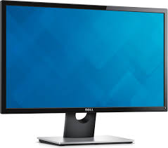

quando si ha finito di montare il case, collegare il monitor al case attraverso il cavo HDMI e poi con il cavo di alimentazione alla corrente. Collegare un mouse e una tastiera, collegare il computer all'alimentazione ed accendere il computer per accertarsi che funzioni correttamente.